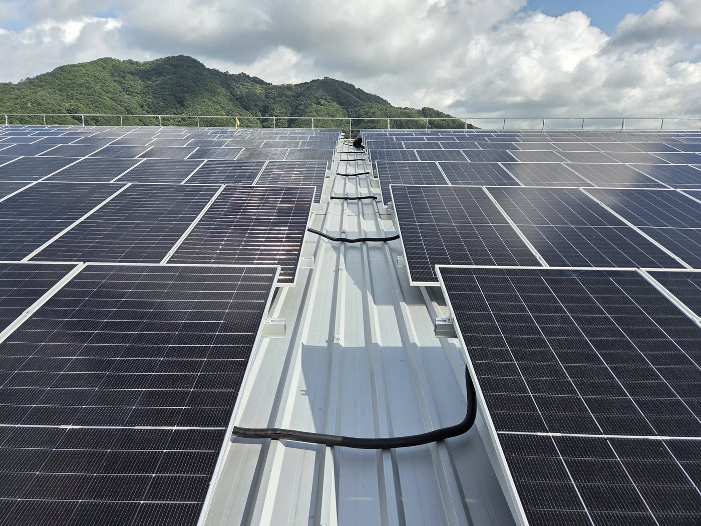
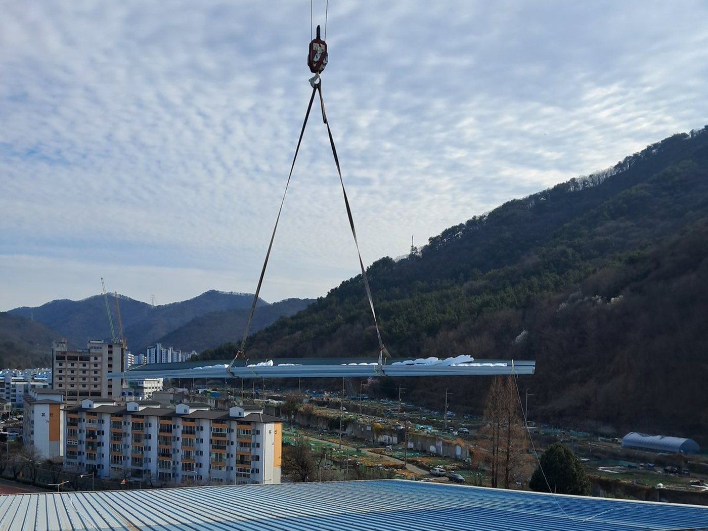
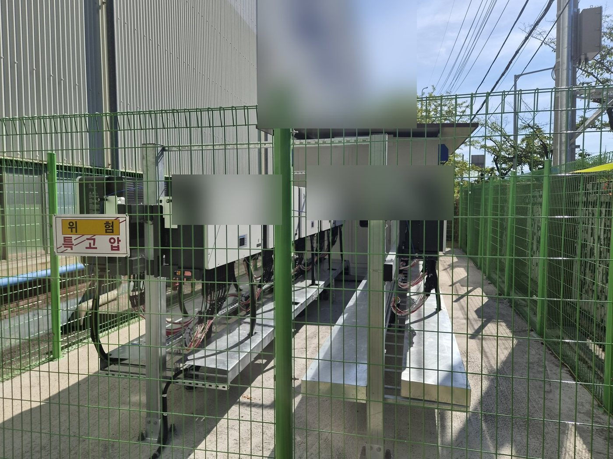
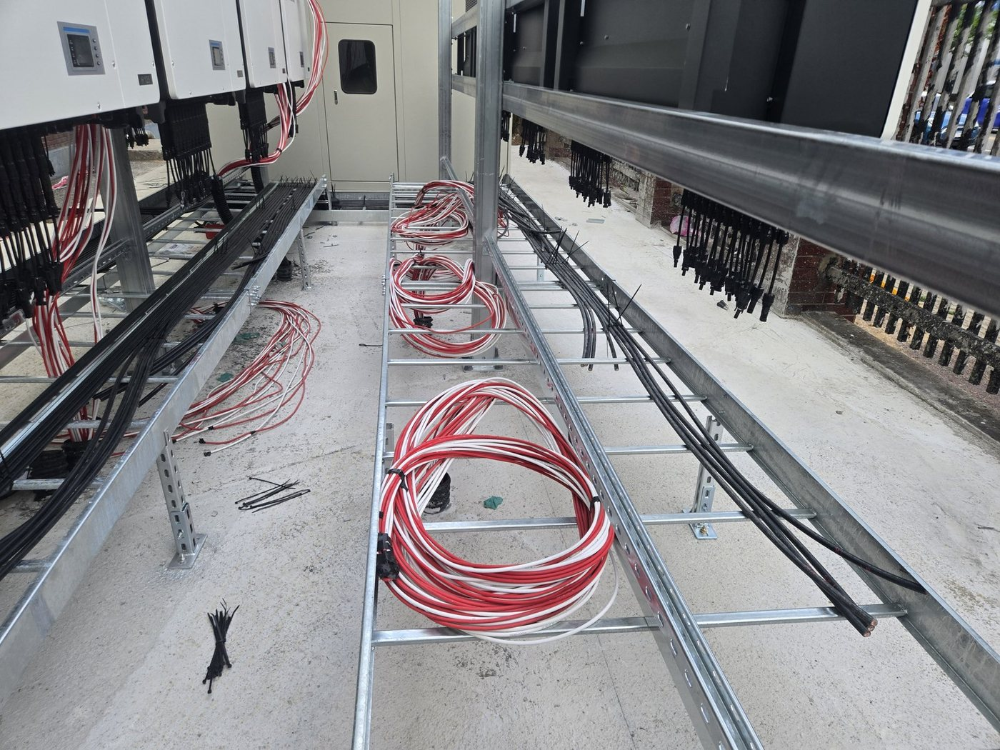

창원 A 제조공장 지붕 태양광 1.35 MW: 설계·인허가·시공을 한 회사가 맡은 현장
경남 창원 국가산업단지의 한 제조공장 지붕에 1,349.12 kWp를 올리고 2026년 7월 31일 상업운전을 시작했습니다. 설계, 인허가, 시공을 저희가 한 번에 맡은 발전사업 현장입니다.
현장 개요
- 유형
- 공장 지붕 태양광(발전사업, 전력거래소 판매)
- 지역
- 경남 창원 국가산업단지
- 용량
- 1,349.12 kWp(약 1.35 MW)
- 한 일
- 설계, 인허가, 시공(EPC), 준공 서류
- 상업운전
- 2026년 7월 31일
- 지붕
- 공장동과 창고동 금속 골강판 지붕, 경사 약 6°
고객 이름, 금액, 지번은 싣지 않습니다. 회사 이름은 'A 제조공장'처럼 적습니다.
준공 사진

준공한 지붕 어레이와 레일 위 케이블 정리 
창원 시가지를 배경으로 한 지붕 어레이 전경 
지붕 가장자리 안전난간과 어레이 
크레인으로 지붕 보강 강판을 올리는 모습 
지상 패드 위 인버터와 수배전함, 펜스 
인버터 아래 케이블 트레이 시공
고객사 보호를 위해 회사 이름이 보이는 부분은 가렸습니다. 사람이 나오는 사진은 싣지 않았습니다.
진행 순서
설계 → 인허가 → 시공 → 사용전검사와 상업운전. 날짜는 인허가 서류 원문 기준입니다.
- 설계2025년 8월~12월
지붕 구조검토(고정하중, 활하중, 설하중, 풍하중, 지진하중), 어레이 배치도, 단선결선도, 구조검토서(지지공작물과 하부 건축물).
- 인허가2025년 10월~2026년 2월
발전사업허가 접수(10월 17일) → 허가(11월 24일) → 한전 이용신청과 전력거래소 회원등록 같은 날 제출(12월 15일) → 공작물축조신고 접수(1월 7일), 보완 4건 뒤 수리(2월 6일) → 전기안전공사 사전기술검토 보완 7건 반영(2월 6일) → 공사계획 신고필증(2월 26일).
- 시공2026년 2월~7월
2월 안전시설(추락방지망, 안전사다리, 안전난간)부터 → 3~4월 지붕 강판 보강, 모듈 입고와 감리 검수 → 4~5월 구조물과 모듈 2,108장 → 6월 접지, 트레이, 지중 관로, 변전설비 기초 → 7월 변압기, 수배전함, 인버터 14대 결선. 잦은 비와 레미콘 파업으로 공사계획 변경신고 두 번.
- 사용전검사·운전2026년 7월 23일~31일
7월 23일 사용전검사 한 번에 합격 → 7월 29일 한전 계통연동시험과 계량기 봉인 → 7월 31일 전력거래소 계량설비 봉인, 전력거래개시 확인, 상업운전 → 8월 1일 사업개시신고 → RPS 설비확인(REC)까지 서류 마무리.
설비 구성
| 항목 | 값 |
|---|---|
| 모듈 | 640 W × 2,108장 = 1,349.12 kWp(단결정 양면형) |
| 인버터 | 125 kW × 14대, 지상 패드 위 일렬 설치(접속반 일체형) |
| 변압기 | 몰드형 1,500 kVA, 22.9 kV / 380 V |
| 연계 | 22.9 kV 특고압 지중선로, 옥외 수배전함 신설 |
| 구조물 | 알루미늄 합금(6063-T5) 고정식, 모듈 경사 15°, 남향 |
| 지붕 보강 | 기존 골강판 위 강판 덧씌움, 고정부 인발력 7.5 kN 확인 |
| 접지 | 5 Ω 이하 목표 |
| 판매 방식 | 1,000 kW를 넘어 한전 PPA 대신 전력거래소 회원 등록 뒤 전력시장 판매 |
숫자는 공사계획 신고필증과 사용전검사 확인증 원문 기준입니다. 상업운전 뒤 계산 값(발전량, 회수기간)은 제안 단계 추정치라 이 쪽에 싣지 않습니다.


이 현장에서 배운 것
- 1 MW를 넘으면 파는 곳이 다릅니다. 한전 PPA 계약서 한 장이 아니라 전력거래소 회원 등록, 발전기 등록, 계량설비 봉인, 전력거래개시 확인서까지 관문이 늘어납니다.
- 국가산업단지 공장은 공작물축조신고 때 산업단지공단과 '태양력 발전업' 입주계약이 조건으로 붙습니다.
- 사전기술검토 보완 7건의 공통점은 도면, 규격서, 시험성적서의 숫자와 제조사가 서로 같아야 한다는 것이었습니다.
- 인버터를 지붕이 아니라 지상 패드에 두면 점검과 교체 때 지붕에 오르지 않아도 됩니다.
자주 묻는 질문
1.35 MW 공장 지붕 태양광은 전기를 어디에 파나요?
1,000 kW를 넘어 한전 PPA가 아니라 전력거래소 회원으로 등록해 전력시장에 팝니다. 이 현장은 한전 이용신청과 전력거래소 회원등록 서약서를 같은 날 내서 뒤 일정이 밀리지 않게 했습니다.
공장 지붕에 1.35 MW를 올릴 때 구조 보강은 어떻게 했나요?
건축구조기술사 구조검토로 다섯 가지 하중을 확인하고, 기존 골강판 위에 강판을 덧씌워 보강한 뒤 알루미늄 구조물을 올렸습니다. 고정부는 한 곳당 인발력 7.5 kN을 견디는지 확인했습니다.
착공부터 상업운전까지 얼마나 걸렸나요?
2026년 2월 안전시설 설치부터 7월 31일 상업운전까지 약 6개월입니다. 발전사업허가 접수(2025년 10월)부터 세면 약 9개월 반입니다.